Articles by Dr. Jungho Oh, ENT specialist at Sangkwaehan ENT Clinic in Jinhae, Changwon. 20 articles. Each post is an English adaptation of an article from our Korean blog, written for international residents of Jinhae, Changwon, Masan and nearby areas.
Can weight-loss medication treat obstructive sleep apnea, and can you stop CPAP after losing weight? An ENT specialist in Changwon reviews the evidence.

Steroid, combination and decongestant nasal sprays work differently. An ENT specialist in Jinhae, Changwon explains when each is used and how to use them.
Tinnitus distress depends on how the brain reacts to sound. An ENT specialist in Jinhae, Changwon explains tinnitus CBT, a 6-step home routine and red flags.

Why a rapid flu test can be negative in the first hours of fever, how a molecular test differs, and when each makes sense — from an ENT in Jinhae, Changwon.
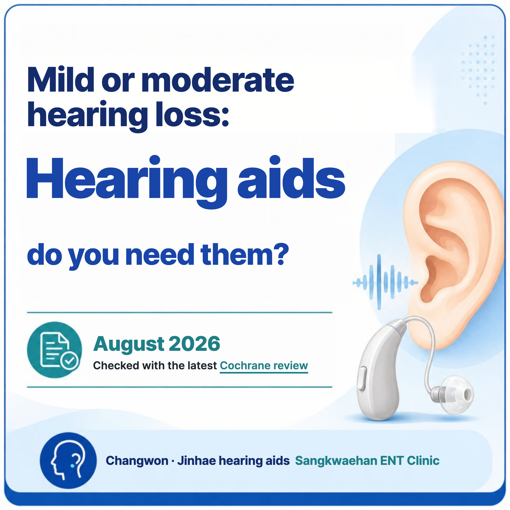
Do you need hearing aids for mild or moderate hearing loss? An ENT specialist in Jinhae, Changwon sums up the 2026 Cochrane review: benefits, limits, fitting.
What happens after stopping GLP-1–based weight-loss medication? Trial evidence on weight regain, maintenance and habits, plus why sleep apnea needs re-checking.
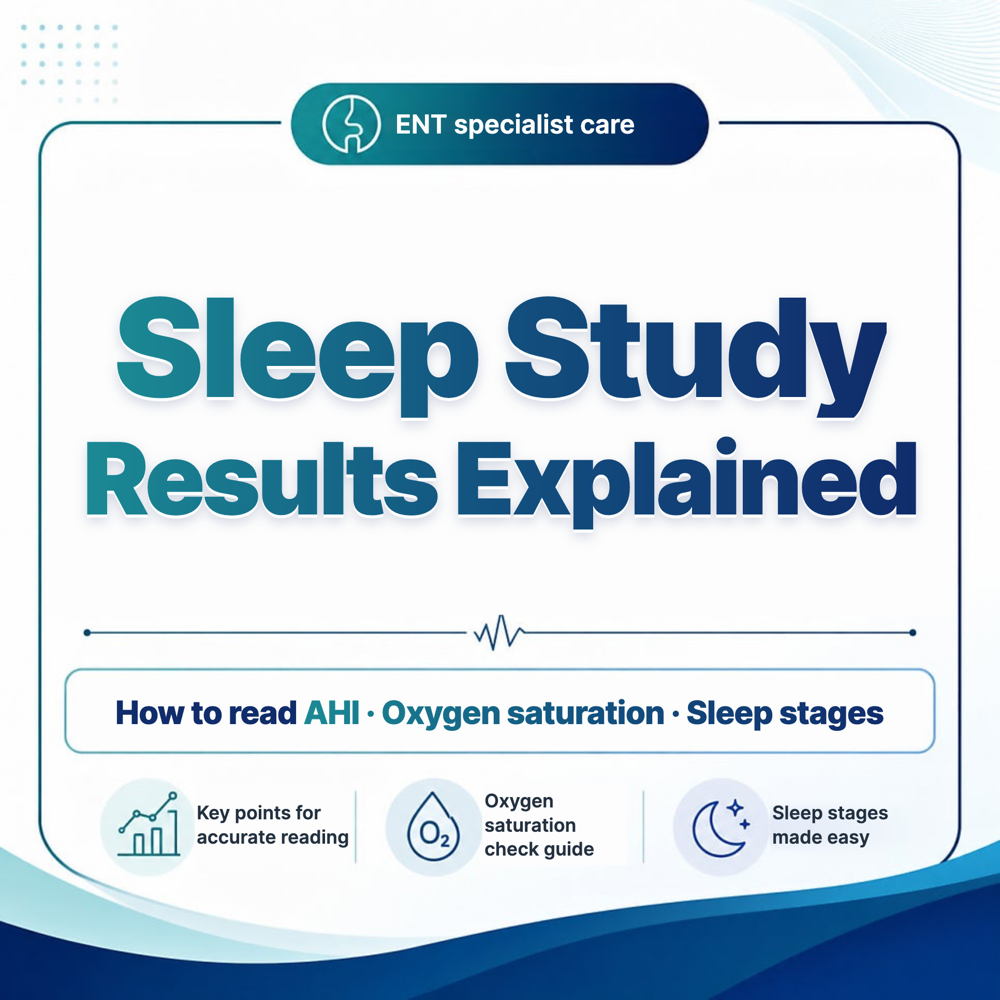
A plain-English guide to your sleep study (PSG) report — AHI, RDI, lowest oxygen, ODI, T90, sleep stages and arousals — from an ENT in Changwon, Korea.
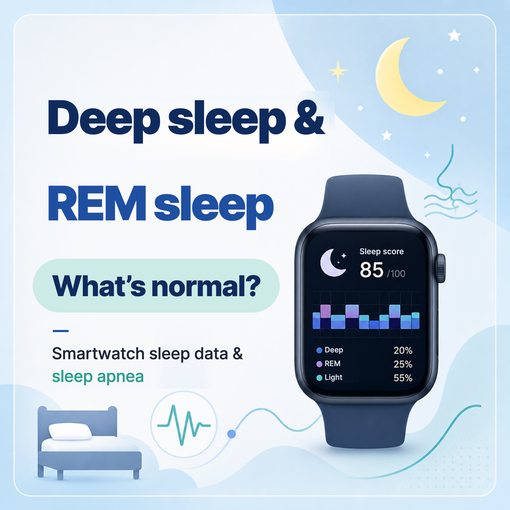
Typical deep, light and REM sleep proportions, how far to trust smartwatch sleep data, and a real comparison with a sleep study — from an ENT doctor in Korea.
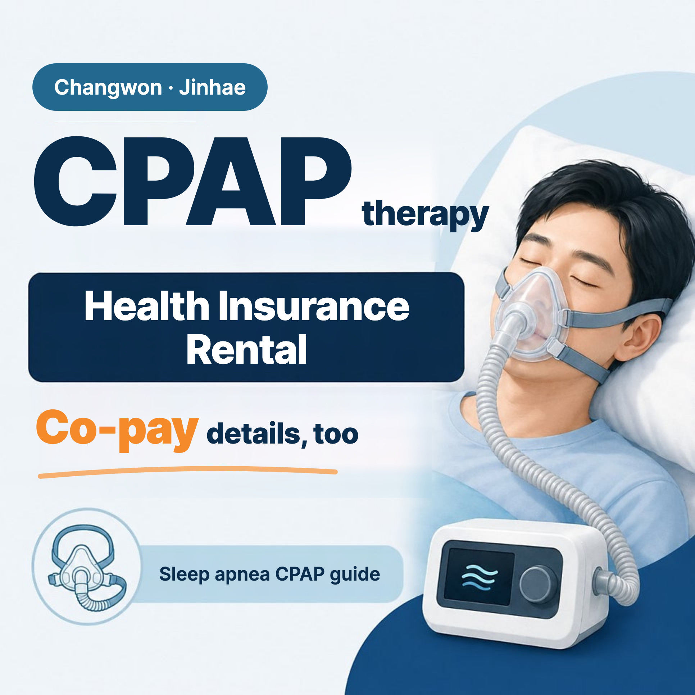
How CPAP works, CPAP vs APAP vs BiPAP, pressure titration, National Health Insurance rental, co-payments and the 90-day adherence rule, explained by an ENT.

Who needs a sleep study, what polysomnography measures, what happens on the night and how AHI guides treatment — from an English-speaking ENT clinic in Jinhae.
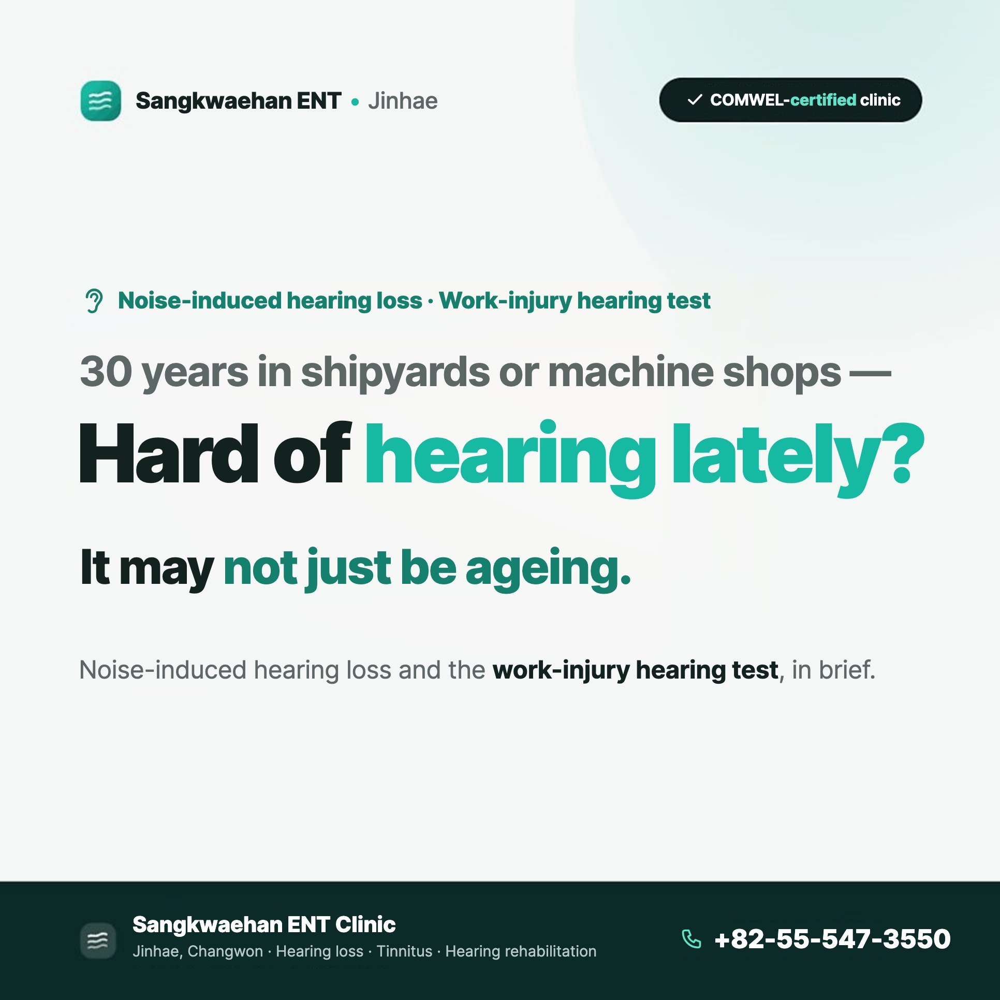
Years in a shipyard or factory and now hard of hearing? An ENT explains noise-induced hearing loss and Korea's workers' compensation hearing test criteria.
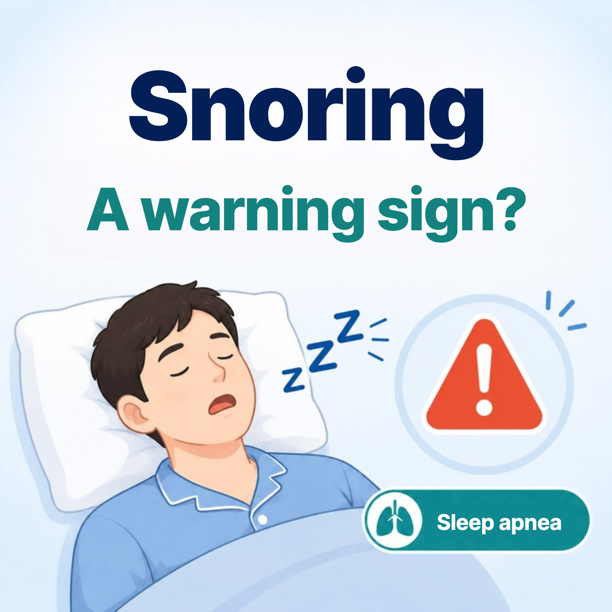
How simple snoring differs from obstructive sleep apnea, warning signs that mean you should get checked, and how a sleep study confirms it, from an ENT.
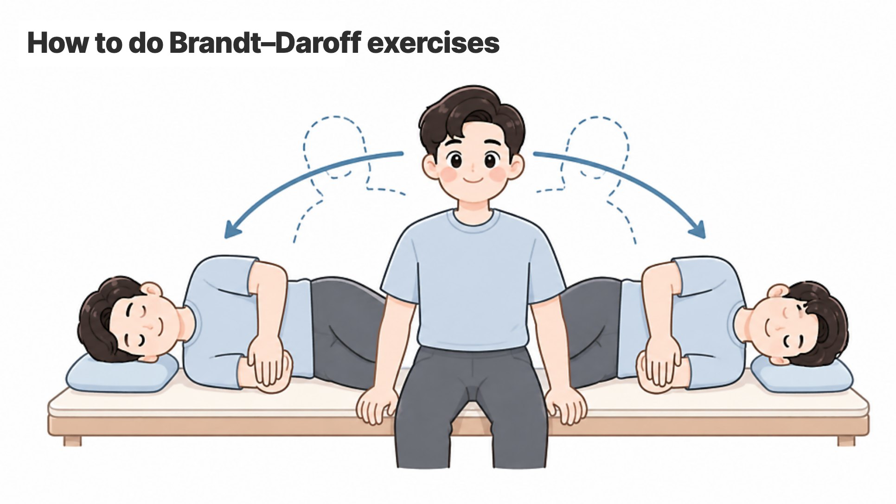
Can you treat BPPV (positional vertigo) at home with Brandt-Daroff exercises? An ENT explains when they help, how to do them and when to see a doctor first.
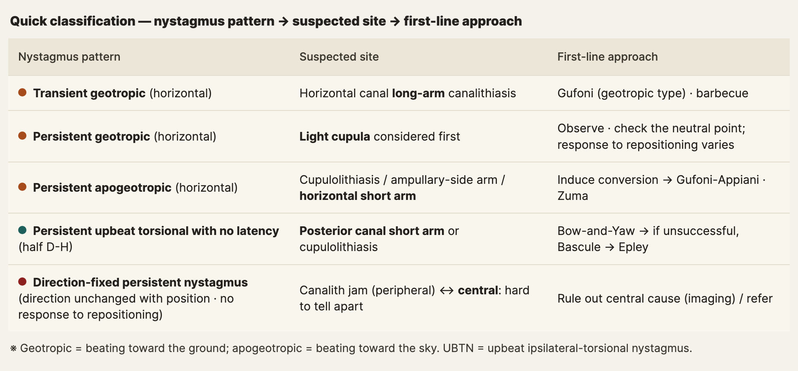
Clinical reference on atypical BPPV: short-arm horizontal and posterior canal variants, conversion, Gufoni, Bow-and-Yaw, Bascule and central red flags.
A patient guide to weekly GLP-1-based weight-loss injections: how they work, injection tips, side effects, gallstone and pancreatitis risk, tests and diet.
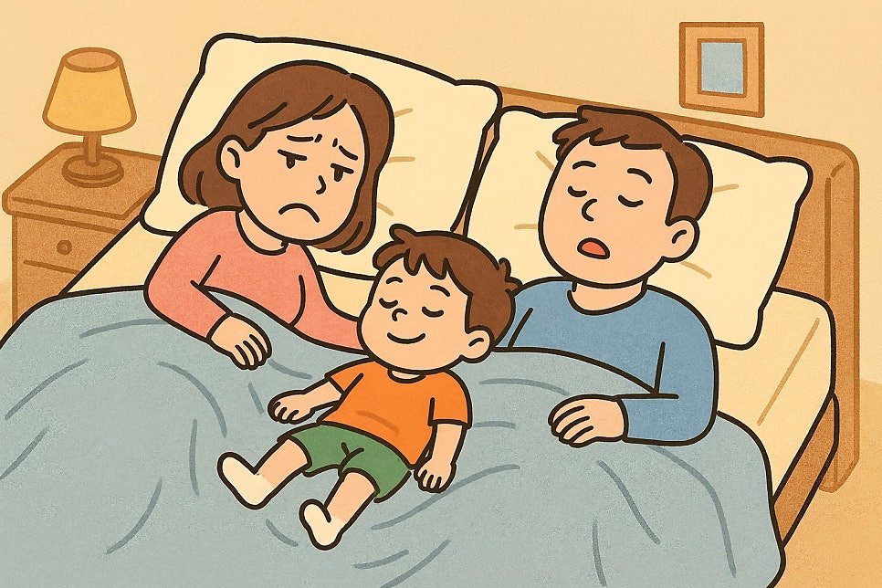
Antihistamines are known to make you drowsy, yet some people sleep worse on them. An ENT explains sleep fragmentation and practical fixes for allergy sufferers.
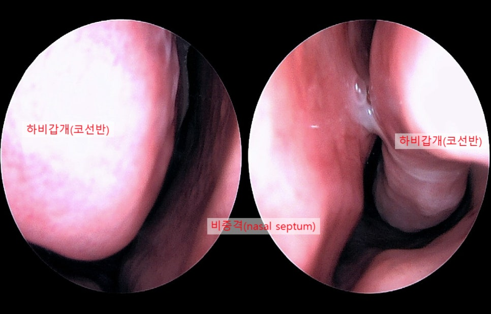
One-sided headache with a blocked nose that painkillers barely touch? An ENT explains contact point headache from a deviated septum and its treatment.
Paper review: a 2022 randomized trial compared mastoid-vibration repositioning (CuRM) with a new manoeuvre for horizontal canal cupulolithiasis.
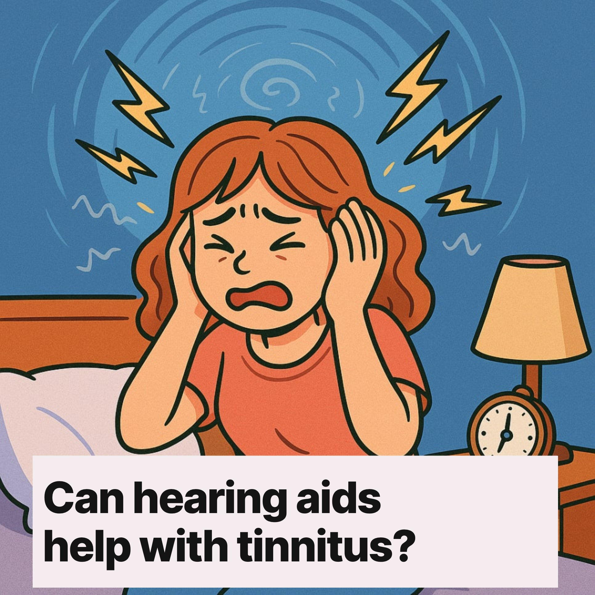
Hearing aids do more than make sounds louder. An ENT explains four ways they may ease tinnitus, what the 2025 guideline says and who should consider them.
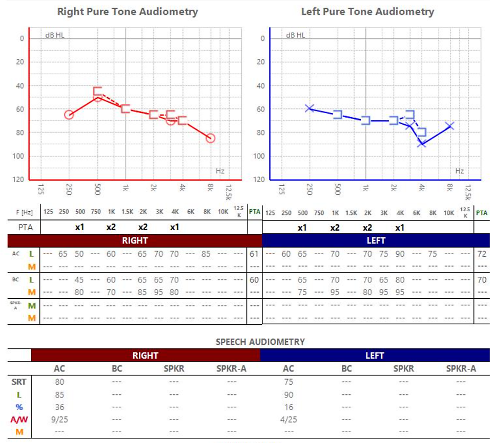
How hearing disability assessment works in Korea: prior test records, three visits with pure-tone, speech and ABR tests, the two severity levels and next steps.
Sangkwaehan ENT Clinic in Jinhae, Changwon offers ENT consultations in English.